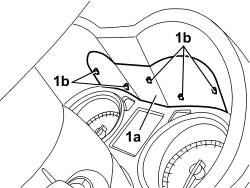
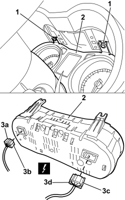

5560B10 CONTROL PANEL - R+R
- Path
- Procedures > 55 ELECTRICAL EQUIPMENT > 5560 INSTRUMENTS > 5560B ANALOGUE CONTROL PANEL > 5560B10 CONTROL PANEL - R+R
- Kind
- repair procedure (removal / refitting; the operation number is the code)
- Applies to
- all engines; all production periods
- Interactive page
- https://sloeber94.github.io/elrnDB-aBrrSpdr/en/#/946002434
Applies to: all engines; all production periods
 Removing
Removing
 Refitting
RefittingOp. 7040A26 STEERING COLUMN TRIM - R+R
- Place the steering wheel in the lower and retracted end of travel positions
1. Remove the trim (1a), releasing the retaining clips (1b).

Applies to: all engines; all production periods
1. Undo the bolts.
2. Move the instrument panel slightly.
3. Disconnect the electrical connections (3a-b, 3c-d).
Description | Component |
|---|---|
INSTRUMENT PANEL |
4. Keep the control panel.

Applies to: all engines; all production periods
Refitting
Removing- Check that the control panel is not damaged.
- Connect the electrical connections.
- Position the trim and attach the retaining clips.
Op. 7040A26 STEERING COLUMN TRIM - R+R
- Check that the control panel instruments are working.
Topics linked from this page (2)
Topics that link to this page (158)
- G010 NO ACOUSTIC WARNING FOR HANDBRAKE APPLIED WITH VEHICLE MOVING
- K003 SPEEDOMETER NOT WORKING
- K005 MILOMETER NOT WORKING
- K008 DISPLAY DOES NOT SHOW OUTSIDE TEMPERATURE
- K009 DOORS OPEN CHECK WARNING LIGHT/SYMBOL ON
- K011 DISPLAY SIGNALS ICE DANGER WITH HIGH OUTSIDE TEMPERATURE
- K012 DISPLAY DOES NOT SIGNAL ICE DANGER WITH LOW OUTSIDE TEMPERATURE
- K015 CLOCK NOT WORKING
- K021 FUEL RESERVE WARNING LIGHT NOT WORKING
- K033 DOORS OPEN CHECK WARNING LIGHT ON
- K043 DISPLAY DOES NOT SHOW AVERAGE CONSUMPTION ON TRIP MODULE
- K045 HEATER PLUGS WARNING LIGHT NOT WORKING
- K047 MINIMUM ENGINE OIL PRESSURE WARNING LIGHT ON CONSTANTLY
- K049 MIL WARNING LIGHT AND VEHICLE PROTECTION WARNING LIGHT BOTH OFF (ENGINE DOES NOT START)
- K052 VEHICLE PROTECTION WARNING LIGHT ON (ENGINE DOES NOT START)
- K053 M.I.L. WARNING LIGHT OFF (INITIAL TEST NOT CARRIED OUT) / ENGINE DOES NOT START
- K054 VEHICLE PROTECTION WARNING LIGHT OFF (ENGINE DOES NOT START)
- K060 ABS FAILURE WARNING LIGHT ON
- K061 ABS WARNING LIGHT OFF (INTIAL TEST NOT CARRIED OUT)
- K062 ABS AND HANDBRAKE WARNING LIGHTS BOTH ON
- K066 HANDBRAKE WARNING LIGHT DOES NOT COME ON (WITH HANDBRAKE APPLIED)
- K068 ESP WARNING LIGHT ON
- K069 PARKING BRAKE FAILURE WARNING LIGHT ON
- K080 AIR BAG FAILURE WARNING LIGHT ON
- K081 AIR BAG WARNING LIGHT OFF (INITIAL TEST NOT CARRIED OUT)
- K082 PASSENGER AIR BAG DISABLED WARNING LIGHT ON
- K090 INSTRUMENT LIGHTS NOT WORKING
- K091 INSTRUMENT LIGHTS DIMMER NOT WORKING
- K092 DISPLAY MODULE IS NOT WORKING
- K095 INSTRUMENT PANEL NOT WORKING
- K100 MIL WARNING LIGHT NOT WORKING (REMAINS OFF BEFORE STARTING)
- K101 MIL WARNING LIGHT STAYS ON (ENGINE STARTS)
- K104 DISPLAY DOES NOT SHOW HEADLAMP ALIGNMENT DATA
- K122 WATER IN DIESEL FILTER WARNING LIGHT OFF (INITIAL TEST NOT CARRIED OUT)
- K123 WATER IN DIESEL FILTER WARNING LIGHT ON CONSTANTLY
- K124 HEATER PLUGS WARNING LIGHT ON CONSTANTLY
- K125 DISPLAY DOES NOT SHOW RANGE ON TRIP MODULE
- K126 DISPLAY DOES NOT SHOW AVERAGE SPEED ON TRIP MODULE
- K127 DISPLAY DOES NOT SHOW JOURNEY TIME ON TRIP MODULE
- K141 MODE BUTTON NOT WORKING
- K142 RECHARGING WARNING LIGHT ON
- K143 ONE WARNING LIGHT ACTIVATED BY STEERING COLUMN SWITCH UNIT NOT WORKING
- K144 ONE WARNING LIGHT ACTIVATED BY STEERING COLUMN SWITCH UNIT ON CONSTANTLY
- K145 ONE WARNING LIGHT ACTIVATED BY CONTROL PANEL NOT WORKING
- K146 ONE WARNING LIGHT OPERATED BY CONTROL PANEL ON CONSTANTLY
- K158 GENERAL FAILURE WARNING LIGHT NOT WORKING
- K159 GENERAL FAILURE WARNING LIGHT ON CONSTANTLY
- K163 TEG LOCK WARNING LIGHT ON CONSTANTLY
- K164 TEG LOCK WARNING LIGHT NOT WORKING
- K166 RAIN SENSOR WARNING LIGHT ON CONSTANTLY
- K167 PARTICULATE FILTER CLEANING/CHANGE WARNING LIGHT ON CONSTANTLY
- K168 PARTICULATE FILTER CLEANING/REPLACEMENT WARNING LIGHT ON CONSTANTLY
- P030 NO DOORS / BOOT OPEN BUZZER SIGNAL WITH CAR IN MOTION
- 1040AC FUEL LEVEL GAUGE CHECK
- 1040AC FUEL LEVEL GAUGE CHECK
- 3340AB SPEED SIGNAL CHECK
- 1820B21 MASTER CYLINDER (PUMP) - R R FOR RIGHT HAND DRIVE VERSIONS
- 3330B02 PEDAL ASSEMBLY - R.R
- 3330B23 BRAKE PEDAL - R.R. FOR RIGHT HAND DRIVE VERSIONS
- 3330B27 CLUTCH PEDAL - R.R. FOR RIGHT HAND DRIVE VERSIONS
- 3330B42 PEDAL UNIT SUPPORT - R.R. FOR RIGHT HAND DRIVE VERSIONS
- 3330D18 BRAKE SERVO R R FOR RIGHT HAND DRRIVE VERSIONS
- 5010B24 UNDER-FACIA AIR DUCTS - R.R.
- 5040C10 AIR CONDITIONING CASING - R.R
- 5040C50 AIR CONDITIONING HEATER RADIATOR - R.R.
- 5040C64 A/C EVAPORATOR - R+R
- 5040D80 AIR CONDITIONING SYSTEM CABLE LOOM - R.R. OR REPLACE
- 5040D86 AIR CONDITIONING RIGHT AIR MIXTURE FLAP CONTROL MOTOR - R.R
- 5040D94 AIR CONDITIONING LEFT UPPER AIR DISTRIBUTION FLAP MOTOR (DEFROST) - R.R
- 5040D96 AIR CONDITIONING RIGHT UPPER DISTRIBUTION FLAP MOTOR (DEFROST) - R.R
- 5505C31 BUILT-IN WIRING UNDER DASHBOARD - R.R.
- 5580C22 AIR BAG MODULE - PASSENGER SIDE - R.R
- 5580C24 PASSENGER SIDE AIR BAG MODULE SUPPORT R. R.
- 7040A10 DASHBOARD TRIM - R+R
- 7040A36 STEERING COLUMN FLEXIBLE TRIM - R.R.
- 7210A74 R R FACIA SUPPORT BEAM
- E1050 CAN CONNECTION LINES - WIRING DIAGRAM
- E1050 CAN CONNECTION LINES - COMPONENT LOCATION
- E1050 CAN CONNECTION LINES - WIRING DIAGRAM
- E1050 CAN CONNECTION LINES - COMPONENT LOCATION
- E2010 SIDE LIGHTS/NUMBER PLATE LIGHT - WIRING DIAGRAM
- E2010 SIDE LIGHTS/NUMBER PLATE LIGHT - COMPONENT LOCATION
- E2010 SIDE LIGHTS/NUMBER PLATE LIGHT - WIRING DIAGRAM
- E2010 SIDE LIGHTS/NUMBER PLATE LIGHT - COMPONENT LOCATION
- E2011 DIPPED HEADLIGHTS - WIRING DIAGRAM
- E2011 DIPPED HEADLIGHTS - COMPONENT LOCATION
- E2011 DIPPED HEADLIGHTS - WIRING DIAGRAM
- E2011 DIPPED HEADLIGHTS - COMPONENT LOCATION
- E2012 MAIN BEAM HEADLIGHTS - WIRING DIAGRAM
- E2012 MAIN BEAM HEADLIGHTS - COMPONENT LOCATION
- E2012 MAIN BEAM HEADLIGHTS - WIRING DIAGRAM
- E2012 MAIN BEAM HEADLIGHTS - COMPONENT LOCATION
- E2020 DIRECTION INDICATORS/HAZARD WARNING LIGHTS - WIRING DIAGRAM
- E2020 DIRECTION INDICATORS/HAZARD WARNING LIGHTS - COMPONENT LOCATION
- E2020 DIRECTION INDICATORS/HAZARD WARNING LIGHTS - WIRING DIAGRAM
- E2020 DIRECTION INDICATORS/HAZARD WARNING LIGHTS - COMPONENT LOCATION
- E2021 BRAKE LIGHTS - WIRING DIAGRAM
- E2021 BRAKE LIGHTS - COMPONENT LOCATION
- E2021 BRAKE LIGHTS - WIRING DIAGRAM
- E2021 BRAKE LIGHTS - COMPONENT LOCATION
- E2030 FOG LIGHTS - WIRING DIAGRAM
- E2030 FOG LIGHTS - COMPONENT LOCATION
- E2031 REAR FOG LAMPS - WIRING DIAGRAM
- E2031 REAR FOG LAMPS - COMPONENT LOCATION
- E2510 COURTESY LIGHTS - WIRING DIAGRAM
- E2510 COURTESY LIGHTS - COMPONENT LOCATION
- E2535 CONTROLS LIGHTING - WIRING DIAGRAM
- E2535 CONTROLS LIGHTING - COMPONENT LOCATION
- E3020 WINDSCREEN WASH/WIPE - WIRING DIAGRAM
- E3020 WINDSCREEN WASH/WIPE - COMPONENT LOCATION
- E3040 CENTRAL LOCKING - WIRING DIAGRAM
- E3040 CENTRAL LOCKING - COMPONENT LOCATION
- E3050 FRONT ELECTRIC WINDOWS - WIRING DIAGRAM
- E3050 FRONT ELECTRIC WINDOWS - COMPONENT LOCATION
- E3050 FRONT ELECTRIC WINDOWS - WIRING DIAGRAM
- E3050 FRONT ELECTRIC WINDOWS - COMPONENT LOCATION
- E3090 PARKING SENSOR - WIRING DIAGRAM
- E3090 PARKING SENSOR - COMPONENT LOCATION
- E3096 HOOD OPENING - WIRING DIAGRAM
- E3096 HOOD OPENING - COMPONENT LOCATION
- E4010 INSTRUMENT PANEL - WIRING DIAGRAM
- E4010 INSTRUMENT PANEL - COMPONENT LOCATION
- E4010 INSTRUMENT PANEL - WIRING DIAGRAM
- E4010 INSTRUMENT PANEL - COMPONENT LOCATION
- E4080 TRIP COMPUTER - WIRING DIAGRAM
- E4080 TRIP COMPUTER - COMPONENT LOCATION
- E5010 IGNITION AND RECHARGING - WIRING DIAGRAM
- E5010 IGNITION AND RECHARGING - COMPONENT LOCATION
- E5010 IGNITION AND RECHARGING - WIRING DIAGRAM
- E5010 IGNITION AND RECHARGING - COMPONENT LOCATION
- E5030 PETROL ENGINE ELECTRONIC MANAGEMENT - WIRING DIAGRAM
- E5030 PETROL ENGINE ELECTRONIC MANAGEMENT - COMPONENT LOCATION
- E5030 PETROL ENGINE ELECTRONIC MANAGEMENT - WIRING DIAGRAM
- E5030 PETROL ENGINE ELECTRONIC MANAGEMENT - COMPONENT LOCATION
- E5050 DIESEL ENGINE ELECTRONIC MANAGEMENT - WIRING DIAGRAM
- E5050 DIESEL ENGINE ELECTRONIC MANAGEMENT - COMPONENT LOCATION
- E5060 CRUISE CONTROL - WIRING DIAGRAM
- E5060 CRUISE CONTROL - COMPONENT LOCATION
- E5060 CRUISE CONTROL - WIRING DIAGRAM
- E5060 CRUISE CONTROL - COMPONENT LOCATION
- E5070 PARTICLE FILTER SYSTEM - WIRING DIAGRAM
- E5070 PARTICLE FILTER SYSTEM - COMPONENT LOCATION
- E7010 CODE - WIRING DIAGRAM
- E7010 CODE - COMPONENT LOCATION
- E7022 VDC - WIRING DIAGRAM
- E7022 VDC - COMPONENT LOCATION
- E7030 AIR BAG - WIRING DIAGRAM
- E7030 AIR BAG - COMPONENT LOCATION
- E7030 AIR BAG - WIRING DIAGRAM
- E7030 AIR BAG - COMPONENT LOCATION
- E7030 AIR BAG - WIRING DIAGRAM
- E7030 AIR BAG - COMPONENT LOCATION
- E7051 ROBOTIZED GEARBOX - WIRING DIAGRAM
- E7051 ROBOTIZED GEARBOX - COMPONENT LOCATION
- E7050 AUTOMATIC TRANSMISSION - WIRING DIAGRAM
- E7050 AUTOMATIC TRANSMISSION - COMPONENT LOCATION
- E7065 ELECTRIC STEERING LOCK - WIRING DIAGRAM
- E7065 ELECTRIC STEERING LOCK - COMPONENT LOCATION